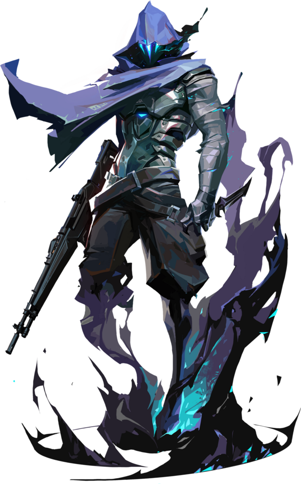

VALORANT
Recommended Controller Agents for Beginners
Brimstone
Brimstone is beginner-friendly because his smokes are simple to place using a map interface, making it easy to block enemy vision without much risk of error.
His abilities, like the Stim Beacon and Incendiary, are straightforward and effective, helping players learn teamwork and post-plant defense without complex mechanics.
Omen
Omen is great for new players because his smokes can cover both short and long distances, giving flexibility in different situations.
His teleport allows beginners to safely reposition and learn map control, while his regenerating smokes help them practice timing without worrying about running out too early.

Clove
Clove is also an excellent choice for beginners because their abilities are forgiving and simple to understand.
Even after dying, Clove can still use smokes and even revive themselves, giving players a second chance to contribute. This encourages learning aggression and confidence while still being useful to the team.